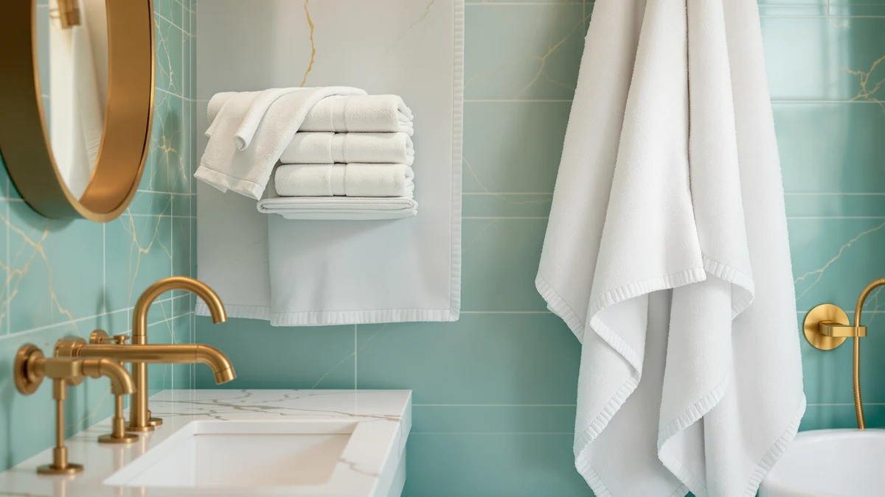

Bath Towel vs Beach Towel: What's the Difference? (2026)
Prices and picks verified as of August 2026. Independent, reader-supported reviews.


Things to Know Before You Buy
- They are sized for different jobs. In the bath towel vs beach towel comparison, size is the first thing you notice: a standard bath towel measures around 27 by 52 inches, while a beach towel often runs 30 by 60 inches or larger, big enough to lie flat on the sand.
- Fabric weight points in opposite directions. Bath towels favor a dense GSM terry for fast absorption, while many beach towels use a lighter, flatter weave so they pack small and dry quickly in the sun.
- Sand resistance only matters for one of them. A beach towel with a tight, low-pile weave sheds sand with a shake, while a plush bath towel with deep loops traps grit.
- Color and print habits differ too. Bath towels lean toward solid, neutral tones that match a bathroom, while beach towels lean into bold prints since they double as a blanket on the sand.
- Price tracks size more than quality. A beach towel often costs more per piece than a bath towel simply because it uses more fabric, not because the fibers are better.
The bath towel vs beach towel comparison confuses a lot of shoppers because both products look like plain rectangles of cotton terry until you actually try to use one for the other job. Grab a bath towel for a beach trip and you end up sitting on damp sand. Grab a beach towel after a shower and you dry off in three passes instead of one.
This guide breaks down where each towel type earns its keep: the tight loops that dry your shoulders in seconds, and the oversized weave that shrugs off sand at the shore, so you know which one to grab before your next trip to the towel aisle.
Quick Answer
In the bath towel vs beach towel comparison, the bath towel wins for everyday drying because its dense terry loops absorb water fast in a small, easy-to-store size. The beach towel wins for trips to the pool or shore, where its bigger surface and sand-shedding weave matter more than plush softness. Most households end up needing both.
What is Bath Towel?
A bath towel is the towel you keep folded in your linen closet and reach for right after a shower. Standard sizes run about 27 by 52 inches, small enough to hang on a single bar yet large enough to wrap around an adult body. In the bath towel vs beach towel comparison, the bath towel is built around one job: pulling water off your skin as fast as possible.
Most bath towels use cotton, Turkish cotton, or a cotton-microfiber blend, woven into tight loops rated in grams per square meter, or GSM. A towel in the 500 to 700 GSM range feels plush and soaks up water quickly without turning into a heavy, slow-drying brick once wet. Because bath towels stay indoors and get washed every few uses, manufacturers optimize them for softness and absorbency over durability against sun, sand, or chlorine. If you want a deeper breakdown of fiber and weight choices, our bath towel buying guide covers the full range.
What is Beach Towel?
A beach towel is built to travel outside the house and survive rougher conditions than a bathroom ever sees. Sizes typically start around 30 by 60 inches and climb past 40 by 70 inches for oversized options, big enough to lie flat on sand with room for a cooler and a bag beside you. In the bath towel vs beach towel split, the beach towel trades some plushness for surface area and durability.
Fabric leans toward a flatter, tighter weave, often Turkish cotton or a cotton-velour blend, so the towel sheds sand with a shake instead of trapping it in deep loops. Many beach towels also dry faster in open air, which matters when you are packing a wet towel into a bag for the drive home. Because they face sun, chlorine, and salt water, beach towels are usually dyed with more colorfast pigments and printed with bold patterns that hide stains better than a plain white bath towel would. The tradeoff is that a beach towel rarely feels as soft against skin as a dedicated cotton bath towel does.
Head-to-Head: Build Quality & Durability
On durability, the bath towel vs beach towel gap comes down to what each fabric has to survive. A bath towel lives indoors, cycles through the wash every three or four uses, and rarely meets anything harsher than hot water and detergent. A well-made 600 GSM cotton towel handles years of that routine before the loops start to thin.
A beach towel faces a tougher test: sun exposure fades color, and chlorine breaks down cotton fibers faster than plain water does. Sand adds a third problem, working its way into the weave and acting like sandpaper with every wash cycle. A tightly woven Turkish cotton beach towel resists that wear better than a loose terry version, since fewer loose loops means fewer places for sand and salt to lodge. A cheap beach towel left on a lounge chair all afternoon can visibly dull within a single season, a fade rate bath towels rarely experience indoors. Expect to cycle through beach towels faster than bath towels, even though both start from similar cotton stock.
Head-to-Head: Price & Value
Price does not settle the bath towel vs beach towel debate on its own, since both categories span a wide range. A solid cotton bath towel runs about $10 to $20 per piece, while a comparable beach towel often costs $15 to $30, mainly because it uses more fabric to cover its larger footprint. Multi-packs shift the math: a six-pack of beach towels can land under $10 per towel, similar to bulk bath towel sets.
Value depends more on how often you replace each type than on the sticker price. A bath towel washed weekly and kept indoors can last three to five years, while a beach towel exposed to sun and chlorine several times a summer often needs replacing sooner, even at a similar price point.
Head-to-Head: Use Experience
Day to day, the bath towel vs beach towel difference shows up in two very different settings. A bath towel meets you right out of the shower, in a warm, dry bathroom, and a tightly looped cotton towel soaks up water in a few passes before you hang it back on the bar to dry between uses.
A beach towel meets you wet, sandy, and outdoors, often draped over a lounge chair or spread across sand for an afternoon. It needs to dry fast in open air and resist sand sticking to the fibers. It also has to survive a folded, damp trip home in a bag without mildewing. A beach towel that stays soaked for hours in a rolled-up bag can pick up a musty smell that a bath towel, hung to dry within minutes, rarely develops. Size changes the experience too: a beach towel can double as a blanket or a wrap, and propped against a chair, it works as a windbreak, jobs a standard bath towel is too small to handle. Pack the wrong one for a pool day and you end up with a towel too small to lie on, or too heavy to dry before your next dip.
When to Choose Bath Towel
Choose a bath towel first if you are restocking your bathroom or replacing a set that has gone thin and scratchy. In the bath towel vs beach towel priority list, the bath towel is the piece you use every day at home, so upgrading it pays off immediately in comfort. Prioritize bath towels if you are outfitting a guest bathroom or a short-term rental, like an Airbnb, where a fresh, soft set signals quality faster than almost anything else in the room. Bath towels also make more sense if storage space is tight, since their smaller folded size takes up less shelf room than an oversized beach towel. If your current towels still absorb well and show no fraying, put your next purchase toward a quick-dry set instead of replacing what already works.
When to Choose Beach Towel
Choose a beach towel first if summer travel or pool days are already on the calendar and your current towel stash is all bathroom-sized. In the bath towel vs beach towel priority list, an undersized towel at the beach means sitting on sand or drying off in stages, sometimes sharing one towel between two people because neither one is big enough alone. Beach towels also make sense for households near a pool, since chlorine and sun exposure wear them out faster than a bath towel ever experiences, which means more frequent replacement regardless of the room. If you travel often, look for a lighter, quick-dry beach towel that packs small, since a plush cotton one can take up half a suitcase. Our best beach towels roundup breaks down the top options by size and fabric.
Our Top Picks
Whichever side of the bath towel vs beach towel decision you are shopping for this week, these three picks cover both categories at different price points.

Editor’s Pick
Gold CASE LYCIA Turkish Beach
An oversized Turkish cotton beach towel with a tight, sand-resistant weave, a strong pick if you want hotel-quality softness that still holds up to sun and salt water.
$69.99
Check Price on Amazon
Best Value
BolBom*S Beach Towels 6 Pack
A six-pack of lightweight beach towels that works out to well under $10 each, a practical option for families or anyone who wants a spare towel in every bag.
$42.98
Check Price on Amazon
Premium Choice
Utopia Towels Pack of 4
A four-piece ring-spun cotton bath towel set with a denser terry weave than most bulk packs, worth stocking the linen closet with once your current towels start feeling thin.
$29.99
Check Price on AmazonWhat is the main difference between a bath towel and a beach towel?
The main difference in the bath towel vs beach towel comparison is size and fabric weight.
Can I use a beach towel as a bath towel?
Yes, though it will not absorb water as fast as a dedicated bath towel.
Frequently Asked Questions
What is the main difference between a bath towel and a beach towel?
Can I use a beach towel as a bath towel?
Can I use a bath towel at the beach?
Why are beach towels bigger than bath towels?
How often should I wash a beach towel compared to a bath towel?
Final Verdict
The bath towel vs beach towel question has no single winner, since each towel is built for a different environment: one for a warm, dry bathroom, and one for sun, sand, and chlorine. If your linen closet is already stocked, prioritize a beach towel like the Gold Case Turkish beach towel above for your next trip, then round out your bathroom towels once the summer season slows down.